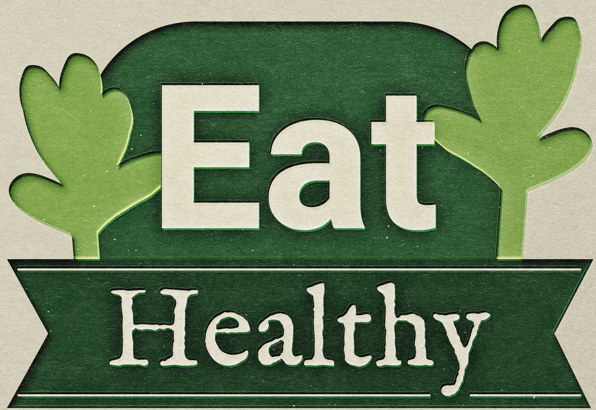
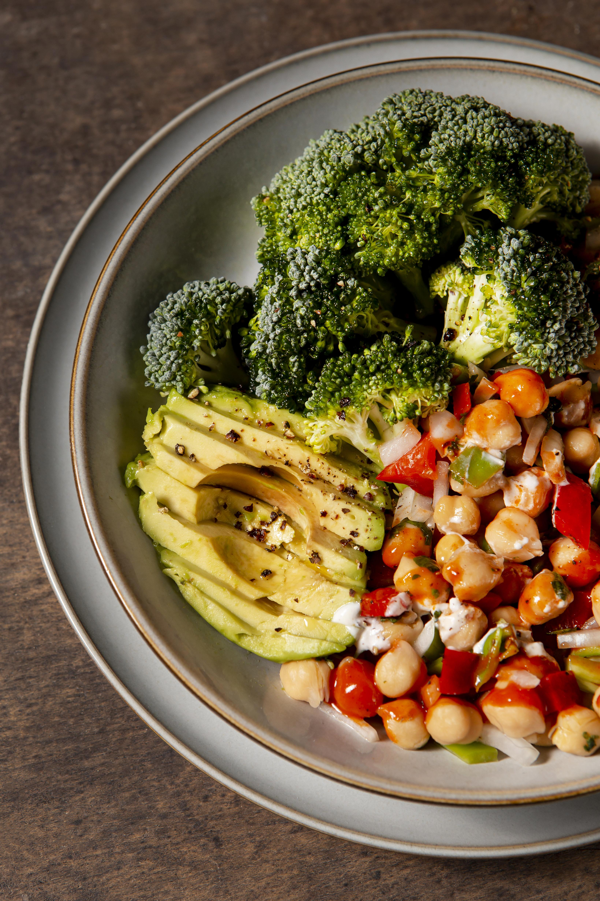
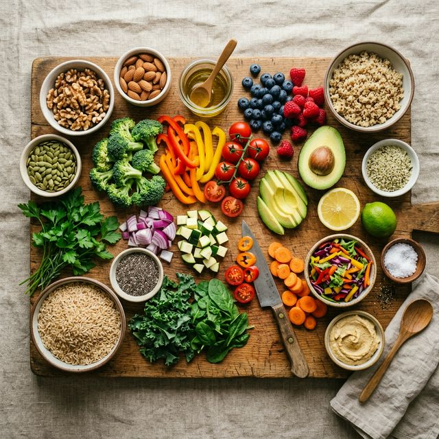

Método comprobado por más de 30,000 mujeres transformadas. Sin dietas extremas, sin pasar hambre — resultados visibles en 7 días.

Esta propuesta está pensada especialmente para mujeres de más de 40 años que quieren cuidar su salud, su bienestar y su energía, respetando su cuerpo y su ritmo. Sin dietas extremas, sin pasar hambre — resultados visibles y sostenibles.
Soy profesional de la salud con un enfoque integral que combina nutrición y bienestar emocional. Mi misión es acompañarte en un cambio real, sin recetas mágicas ni restricciones imposibles.
Conocemos tu historia, tus hábitos y definimos un plan de acción realista.
Guía simple y adaptada a tu día a día: práctica, clara y flexible.
Ajustes, apoyo y motivación para que el proceso sea más liviano.
Resultados reales de mujeres como vos que decidieron dar el primer paso.
Después de años probando dietas, finalmente encontré algo que funciona. Bajé 8 kg en el primer mes sin pasar hambre.
Mi panza era mi mayor inseguridad. En 3 semanas ya noté cambios increíbles. ¡Recuperé mi confianza!
Lo mejor es que aprendí a comer bien sin restricciones extremas. Bajé 12 kg y me siento con más energía que nunca.
Elegí el plan que mejor se adapte a vos para comenzar este camino.

El programa intensivo que ha transformado a miles de mujeres. Alimentación estratégica y hábitos que activan tu metabolismo.
Para más información o para agendar una consulta, no dudes en escribirme.
Sé la primera en enterarte cuando abramos nuevos cupos.
✅ ¡Gracias! Te contactaremos pronto.